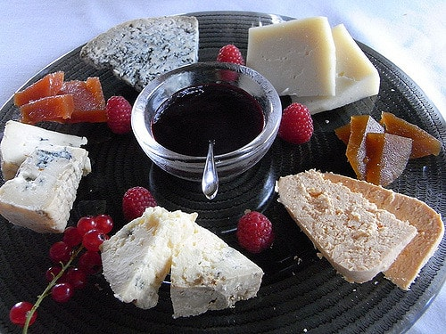
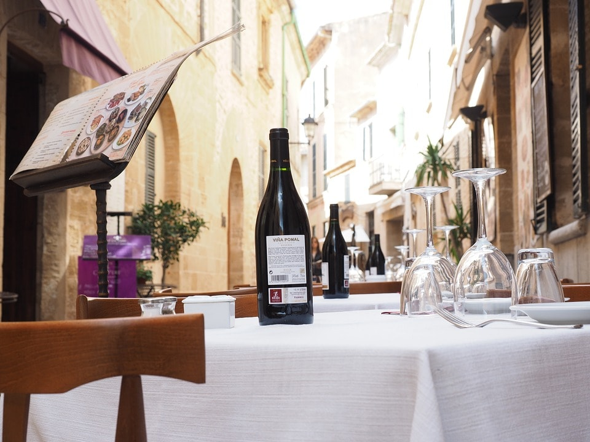
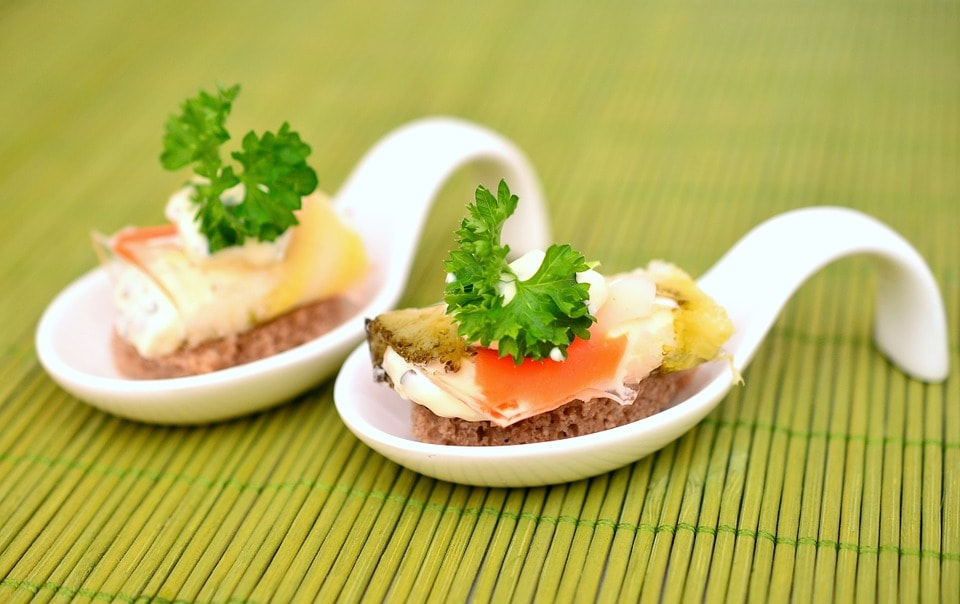
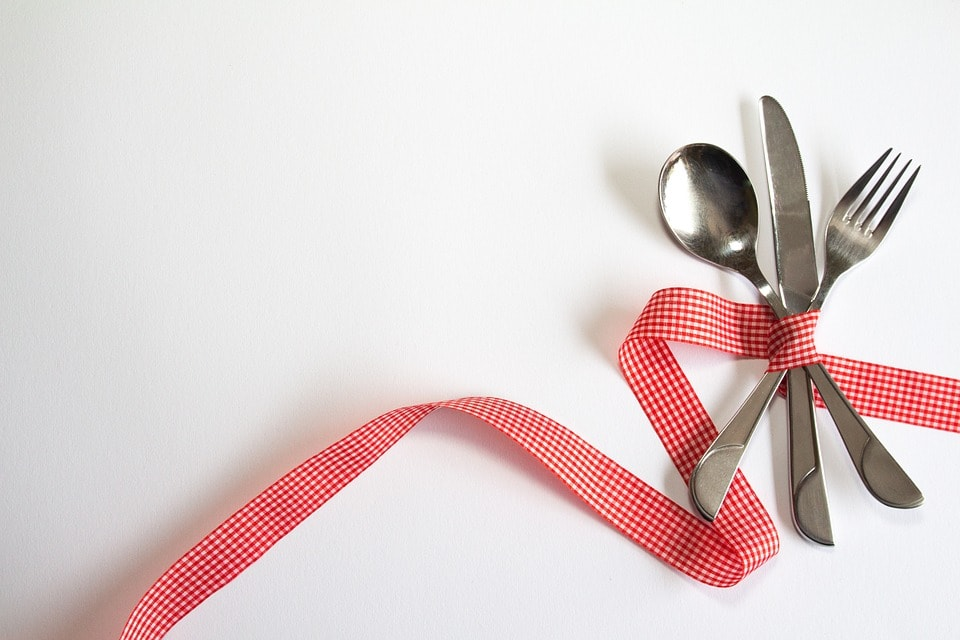
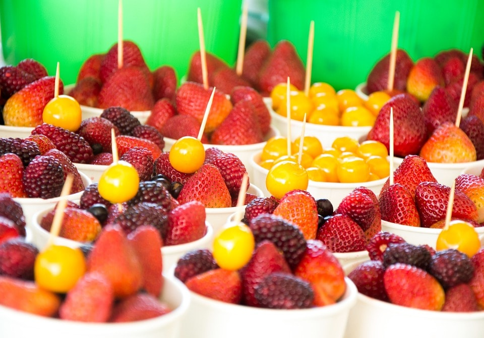
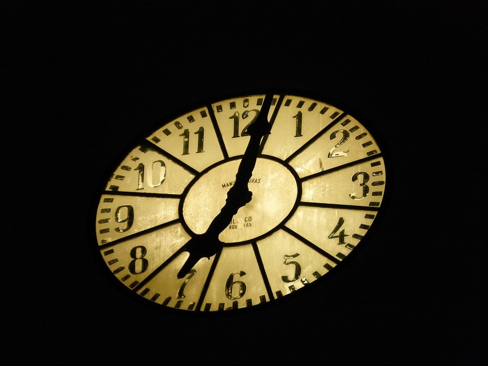
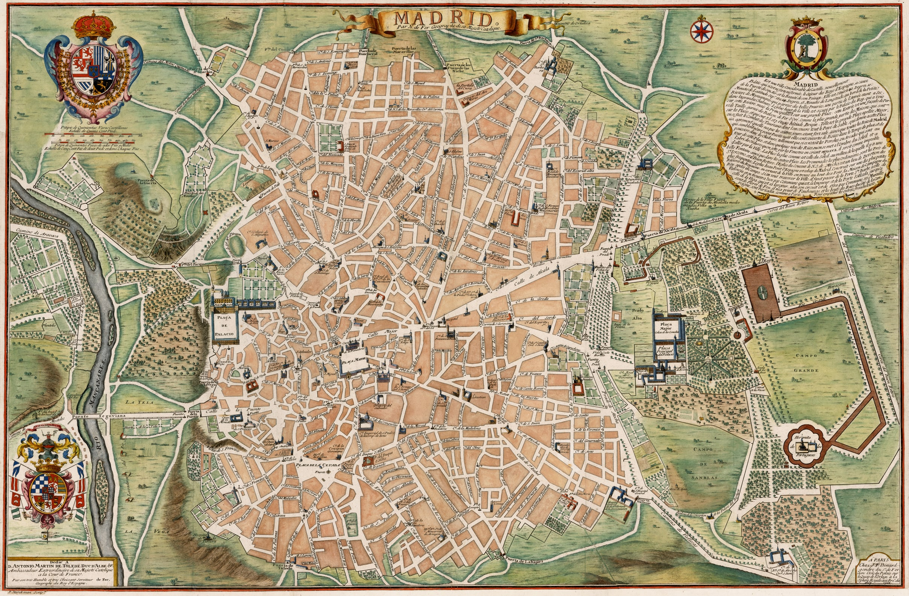

La filosofía de Dadelos es el deleite en la gastronomía en el lugar. Es un placer para todos los sentidos. |
 |
|  | En Dadelos se ha mimado hasta el mínimo detalle para crear un ambiente elegante y cálido, tradicional y moderno, en consonancia con su oferta gastronómica basada en la calidad de los productos de siempre pero con un enfoque contemporáneo. |
| Una carta sugestiva y completa y una cuidada selección de vinos crean una combinación irresistible para cualquier paladar. |  |
|  | En Dadelos todo está concebido para lograr la satisfacción del cliente, para que se sienta a gusto, para que se convierta en un lugar al que desee volver. |
Disponemos de menus para comidas de empresa, comidas familiares, además de un menú especial para noches. Disfruta de una velada agradable en nuestra compañía, siempre con un trato especial a nuestros clientes. |
 |
| Con casi 10.000 metros cuadrados , contamos en nuestras instalaciones con terraza de verano , ascensor , accesos para personas con movilidad reducida, salones privados hasta 100 personas, "Salón de Conferencias Multidiscipinar", aparcacoches... Todo lo que usted pueda necesitar.Todo ello en un ambiente elegante y familiar que le hará sentirse como en casa. |
|
Nuestro horario: COMIDAS DE MARTES A DOMINGO DE 1.30pm a 4.00pm. CENAS VIERNES Y SABADOS DE 9.00pm a 12:00pm. (mejor reservar, no siempre esta abierto). CERRAMOS LOS LUNES. |
 |
|  |
Ubicación: Calle de la Buena Comida Nº 1, esquina con Avenida del Tapeo, Madrid, España. |